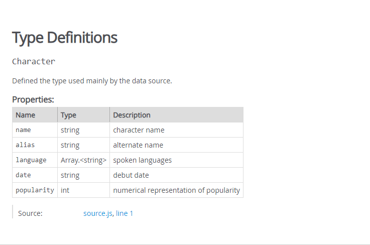

////
/** What is JSDoc? */
/ that./ what?/ what?
/**
* Finds and returns a summary of the most recent character
*
* @param {Character[]} characters - array of characters to search
* @returns {Summary} - summary of most recent character
*/
export function findMostRecent (characters) {}
/ how?
Lots of ways to document code @param, @callback, @enum, etc.
Adding types uses type expressions which boil down to the type wrapped in curly braces: {string}
/ how?
/**
* @property {string} value
* @param {Object} config
* ***
* @prop {int} c
* @arg {number} pi
* @argument {boolean|undefined} isValid
* @type {Array<Component>} children
* ***
* @typedef {import('@types/d3')} D3
*/
/ how?
/** Sorts a given array of characters by popularity.
*
* @param {Character[]} characters - array of characters
* @returns {Character[]} - new sorted array of characters
*/
export function sortByMostPopularity (characters) {
/** Compares two characters returning integer representing
* the signed position for sorting.
*
* @param {Character} characterA
* @param {Character} characterB
* @returns {int}
*/
function compareCharacters (characterA, characterB) {
return characterA.popularity - characterB.popularity
}
return characters.sort(compareCharacters)
}
/ GenerationYou can generate documentation from the comments!
/ Generation/ Templates/ Styling/So short... 🐛
Yup, it exists.
Supports a lot more stuff
/ JSDoc/ JSDocs
/**
* @typedef {import('@types/d3')} D3
*/
/**
* @param {D3} d3
* @returns {void}
*/
function makeChart (d3) {}
/ Casting
/**
* @param {number} num
* @returns {number}
*/
function bar (num) {}
/**
* @param {unknown} arg
* @returns {number}
*/
function foo (arg) {
const num = /** @type{number} */ (arg)
return bar(num)
}